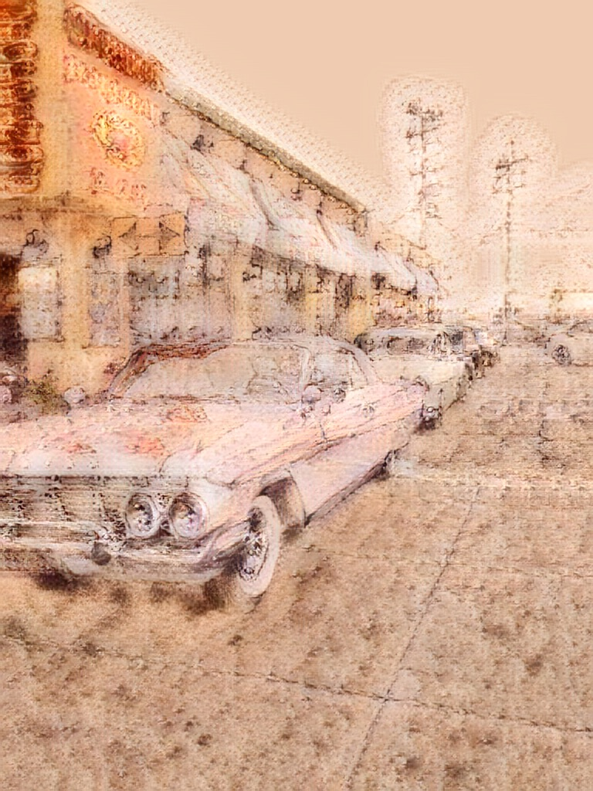

These three images were used with AdaIN-Style Transfer in Runway ML. All three of these images are all taken by me in San Francisco. With the image I used to style them with, it makes it seem as if they were plastered on the wall with the texture that was able to show through. Having all three look like they are from the past, faded and unclear.
